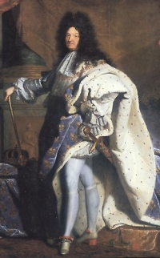

Le règne de Louis XIV (1643-1715) est l'un des plus longs de l'histoire de France. De la minorité sous Mazarin à la mort du Roi-Soleil, la monarchie absolue s'affirme tandis que le pays connaît guerres, expansion et crises financières. Sur le plan monétaire, le règne est marqué par une succession de types d'écus, de louis d'or et de monnaies divisionnaires, ainsi que par des reformes et refontes fréquentes.
Les monnaies du Roi-Soleil, souvent d'une grande qualité artistique (portraits de Warin, Mauger et autres graveurs), constituent un ensemble majeur de la numismatique française de l'Ancien Régime. Plusieurs ateliers travaillent simultanément sous un contrôle royal renforcé. Les séries aux insignes, aux palmes, aux lauriers, etc., offrent une diversité remarquable pour les collectionneurs.
Malgré les difficultés financières de la fin du règne, le cadre monétaire posé sous Louis XIII (louis d'or, écu) se consolide et servira de base aux monnayages du XVIIIe siècle.
Sources : catalogues Ciani, Duplessy, Gadoury · infonumis.info
Les monnaies du règne de Louis XIV
'" />Douzième d'écu à la mèche courte
Date : 1644 ; Atelier : A (Paris) ; 00.000 exemplaires
Argent ; 20 mm ; 2.27g
Avers : LVD. XIIII. D. G. - FR. ET. NAV. REX (Louis XIV, par la grâce de Dieu, roi de France et de Navarre) ; Buste enfantin du Roi à droite, les cheveux courts, lauré, drapé et cuirassé à l'antique, portant l'ordre du Saint-Esprit.
Revers : (point) SIT. NOMEN. DOMINI. (atelier) .BENEDICTVM. (millésime) (Béni soit le nom du Seigneur) ; Ecu de France couronné.
Références : C.1836 G.111 Dr.273 Dy.1464 Dr.2/297
Douzième d'écu à la mèche longue
Date : 1660 ; Atelier : I (Limoges) ; 48.146 exemplaires
Argent 917 ‰ ; 20 mm ; 2.25g (théorique 2.287g)
Avers : LVD. XIIII. D. G (Mg) - .FR. ET. NAV. REX (Louis XIV, par la grâce de Dieu, roi de France et de Navarre) ; Buste enfantin du Roi à droite, lauré, drapé et cuirassé à l'antique, portant l'ordre du Saint-Esprit, une longue mèche descendant sur la cuirasse ; sous le buste (différent).
Revers : (Mm) SIT. NOMEN. DOMINI. (atelier) .BENEDICTVM. (millésime) (Béni soit le nom du Seigneur) ; Ecu de France couronné.
Références : C.1852 G.112. Dr.283 Dy.1472 Dr.2/307
Douzième d'écu au buste juvénile, 1er type
Date : 1664 ; Atelier : D (Lyon) ; 893.888 exemplaires
Argent 917 ‰ ; 20.5 mm ; 2.23g (théorique 2.29g)
Avers : .LVD. XIIII. D. G (Mg) - .FR. ET. NAV. REX. (Louis XIV, par la grâce de Dieu, roi de France et de Navarre) ; Buste juvénile de Louis XIV à droite, les cheveux longs, lauré, drapé et cuirassé vu de trois quarts en avant ; au-dessous un losange.
Revers : (Mm) SIT. NOMEN. DOMINI - D - .BENEDICTVM. 1664 (Béni soit le nom du Seigneur) ; Ecu de France couronné.
Références : C.1865 G.115 Dr.303 Dy.1486 Dr.2/318
Douzième d'écu aux huit L, 1er type
Date : 1691 ; Atelier : A (Paris) flan neuf ; 1.212.234 exemplaires ; Degré de rareté : R1
Argent ; 21 mm ; 2.38g (théorique 2.266g)
Avers : LVD. XIIII. D. G. (soleil) - FR. ET. NAV. REX, (point sous le quatrième I de XIIII) (Louis XIV, par la grâce de Dieu, roi de France et de Navarre) ; Buste de Louis XIV à droite, drapé et cuirassé, avec la grande perruque ; au-dessous 1691.
Revers : CHRS - REGN - VINC - IMP (croissant) (Le Christ règne, vainc, commande) ; Croix formée de quatre groupes de deux L adossées sous une couronne coupant la légende, cantonnés de quatre lis ; au centre dans un cercle, la lettre d'atelier.
Références : C.1892 G.118 Dr.336 Dy.1517 Dr.2/407
Dix Sols aux 4 Couronnes
Date : 1705 ; Atelier : BB (Strasbourg) ; 00 exemplaires
Argent ; 23 mm ; 2.93g (théorique 0g)
Avers : LVD. XIV. D. G. (Mm) - FR. ET. NA. REX (Louis XIV, par la grâce de Dieu, roi de France et de Navarre) ; Buste de Louis XIV à droite, drapé ; au-dessous (Mg) 1705
Revers : .DOMINE. SALVVM. FAC. REGEM. - BB, (légende commençant à 6 heures) (Que Dieu protège notre roi) ; Trois lis posés 2 et 2 entre quatre couronnes.
Tranche : lisse
Références : C.1961 G.132 Dr.396 Dy.1550 Dr.2/513
Dix Sols aux Insignes
Date : 1706 ; Atelier : A (Paris) ; 00 exemplaires
Argent ; 23 mm ; 2.86g (théorique 0g)
Avers : LVD. XIIII. D. G (molette) - FR. ET. NAV. REX (Louis XIV, par la grâce de Dieu, roi de France et de Navarre) ; Buste de Louis XIV à droite, drapé et cuirassé, avec la grande perruque ; au-dessous 1706
Revers : .DOMINE. SALVVM. FAC. REGEM - BB (légende commençant à 6 heures) (Que Dieu protège notre roi) ; La main de justice et le sceptre en sautoir, entre trois lis posés 2 et 1, sous une couronne.
Tranche : lisse
Références : C.1964 G.133 Dr.397 Dy.1566 Dr.2/463
Cinq Sols aux Insignes
Date : 1704 ; Atelier : BB (Strasbourg) ; 22.810.880 exemplaires
Argent 833 ‰ ; 18 mm ; 1.66g (théorique 1.632g)
Avers : (Mm) L. XIIII. D. G (croix) FR. ET. NAV. REX (Louis XIV, par la grâce de Dieu, roi de France et de Navarre) ; Buste de Louis XIV à droite, drapé et cuirassé, avec la grande perruque ; au-dessous 1704
Revers : .DOMINE. SALVVM. FAC. REGEM. - A (légende commençant à 6 heures) (Que Dieu protège notre roi) ; La main de justice et le sceptre en sautoir, entre trois lis posés 2 et 1, sous une couronne.
Tranche : lisse
Références : C.1965 G.121 Dr.395 Dy.1567 Dr.2/514